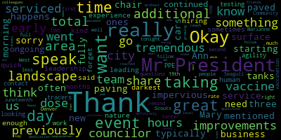
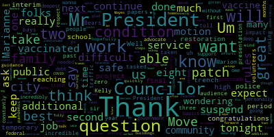

AI-generated transcript of City Council 06-01-21
English | español | português | 中国人 | kreyol ayisyen | tiếng việt | ខ្មែរ | русский | عربي | 한국인
Back to all transcripts
[Caraviello]: Councilor Falco.
[Hurtubise]: Vice President Knight. Present. Councilor Marks. Councilor Morell. Present. Councilor Scarpelli.
[Caraviello]: Councilor Scarpelli will be absent this evening.
[Hurtubise]: President Caraviello.
[Caraviello]: Present. Six in affirmative, one absent. Please rise and salute the flag.
[Hurtubise]: I pledge allegiance to the flag of the United States of America, and to the republic for which it stands, one nation under God, indivisible, with liberty and justice for all.
[Caraviello]: Pursuant to Governor Baker's March 12, 2020 order, suspending certain provisions of the Open Meeting Law, Chapter 38, Section 18, and the Governor's March 15, 2020 order, imposing strict limitation on the number of people that may gather in one place, this meeting of the Medford City Council will be conducted by a remote participation to the greatest extent possible. specific information and general guidance for remote participation by members of the public and the parties with the right of requirement to attend this meeting can be found on the city of Medford website at www.medford.org. For this meeting, members of the public who wish to listen or watch the meeting may do so by accessing the meeting link contained therein. No in-person attendance of members of the public will be permitted, but every effort will be made to ensure that the public can adequately access the proceedings in real time via technological means. In the event we're able to do so despite best efforts, we will post on the City of Medford or Medford Community Media website an audio or video recording transcript or other comprehensive recording of the proceedings as soon as possible after the meeting. Okay. Hearings, 21362 City of Medford, notice of a public hearing. A public hearing will be held by the Medford City Council. in Howard F. Alden Memorial Auditorium, 85 George P. Hazard Drive, Medford, Mass., on Tuesday evening, June 1st, 2021, at 7 o'clock p.m., on a petition from Herbert G. Chambers of Herb Chambers BMW of Medford at 60 Mystic Avenue, Medford, for Class II used auto sales, use special permit Class IV, auto repair use permit, in accordance with Chapter 94 Zoning Ordinance of the City of Medford, Section 94-1. 148D, table of use regulations, automotive uses 27A, for permission to operate its class two secondhand motor vehicle sales and automobile uses 37, for permission to operate its automotive repair establishment at 60 Mr. Gary Method, a commercial two C2 zoning district. A Zoom link for this meeting will be posted in May 27th, 2021. Petition and plan may be seen in the office of city clerk at Medford City Hall, Medford, Massachusetts, call 781-393-2425 for accommodations and aids. Again, good evening, sir. This is a public hearing. I opened this part up. Are you in favor of this project? Yes, Mr. President. Thank you very much. Is there anyone else in favor of this? Excuse me, name and address of the record, sir.
[SPEAKER_03]: Frank Marinelli, I'm an attorney representing the Herb Chambers Companies. My office address is 439 Washington Street, Braintree, Massachusetts.
[Caraviello]: Thank you. Is there anyone else in favor of this? Hearing and seeing none, we close this part of the hearing. Is there anyone in opposition to this hearing? Hearing and seeing none, we close this part of the hearing. Good evening, sir. If you could give us a brief synopsis of your plans.
[SPEAKER_03]: Yes, Mr. President. I'm pleased to appear on behalf of the Herb Chambers Companies and Herb Chambers BMW of Medford. By way of background, Herb Chambers started the company approximately 35 years ago. The company is privately owned by Mr. Chambers. It has grown to about 60 dealerships. We employ approximately 2,000 people. The property at 60 Mystic Avenue, as you know, was formerly Yorkia, and then when it was acquired by the Chambers Companies, It became Herb Chambers Infinity. And now we would like to bring a luxury brand, Herb Chambers BMW pre-owned to Medford. It is an approximate $5 million investment, $4 million approximately in the construction that is ongoing since January. The building is situated on about two and a half acres of land. It's an over 17,000 square foot building. We're adding on approximately 5,400 which would increase the service capacity of the building and also have pre-owned sales. With me on Zoom is John Welch, who is the Director of Construction and Facilities for the Herb Chambers Companies. The Herb Chambers Companies just don't open dealerships and acquire dealerships, but they assiduously maintain their dealerships, as you know, with the cleanliness and the appearance of all of the dealerships. is in charge of that aspect from the company, from the corporate offices. He's happy to answer any questions you might have. Also on the Zoom is Casey Richenberg, who's the director of fixed operations. As you know, Mr. President, the building is currently vacant. And when we reopen, there'll be approximately 30 jobs between sales and service. We would like to commend the officials for the city of Medford that we've been working with from the building department to the DPW to the water and in my own instance with the city clerk's office during COVID attempting to get a hearing scheduled and in particular Jan Grogan who we work with. So we really appreciate the collaboration of all of the municipal officials and of course the city council. We're happy to answer any questions. There's a rendering of the way the facility will appear when we finish all of the construction. It meets the BMW manufacturer requirements for branding and for the look of the building that the particular automotive manufacturer wants, in this case, the luxury brand BMW. Thank you. Councilor Falco.
[Falco]: Thank you, Mr. President. Thank you for opening a business here in Medford. A couple of quick questions. Do you have the hours of operation?
[SPEAKER_03]: Yes, I do. The hours of operation are service in part 7 a.m. to 7 p.m. Monday through Friday. Saturday, 7 a.m. to 5 p.m. Sunday, there'll be no service. On the sales side, 8.30 to 8 p.m., 8.30 a.m. to 8 p.m. Monday through Thursday, Friday and Saturday, 8.30 to 6 p.m., and Sunday 11 to 5 on sales.
[Falco]: And as far as, I'm looking at the paperwork for the next hearing to, will you be servicing vehicles at this facility?
[SPEAKER_03]: Yes, so that's, I'm glad you asked the question. The applications are for, number one, a class two, which allows the pre-owned motor vehicles to be sold, and then a class four repair shop. The addition provides a total of about 13 repair bays. And then the storage license that we asked for is for fresh oil and waste oil. John can explain that, John Welch.
[Caraviello]: That'll be on the next part.
[SPEAKER_03]: Yeah, we have a fluids room and so forth. for that, and I think the final thing was a special permit that the building inspector requested because when you issue a special permit, it goes with a particular user of the site. When do you plan to open for business?
[Falco]: Mid-July. And you mentioned it earlier, I missed this, how many employees at this location?
[SPEAKER_03]: At this location, approximately 30 to start, and that may grow.
[Falco]: And as far as I believe, did you say you were adding on to the existing structure?
[SPEAKER_03]: more efficient service facility for our customers, and obviously increases the capacity as well. We have plenty of parking that you can see on the 2 and 1 1 quarter, 2 and 1 1 1 acre site.
[Falco]: So the section that you're adding on is that phase that you're preparing?
[SPEAKER_03]: Yes. Yes.
[Marks]: Thank you. Councilor Marks. Thank you, Mr. President.
[SPEAKER_20]: So you're not going to be selling new cars at a moving meeting?
[SPEAKER_03]: So the requirements of the manufacturer to have this location, there is geographical territories of licensees with new car sales. And the business reasons, perhaps John could speak to it more. This is really a satellite facility for sales where we can refer any new car sales to our existing dealership at Commonwealth Avenue, Boston. We were not able to secure new car class one sales here. We were only able to get certified pre-owned sales. It's a requirement of BMW NA with the franchisee.
[Marks]: So the other closest BMW is in Somerville, is that correct?
[SPEAKER_03]: That may be true. Well, we have BMW on Commonwealth Avenue in Boston, but as far as another BMW franchisee, I think there's one up on Route 1, but I don't know what the other competitor locations are.
[Marks]: Okay, so it's strictly going to be certified pre-owned? Yes. And how long has Herb Chambers owned that particular piece of property?
[SPEAKER_03]: And John can correct me, I was just checking out vision appraisal records for the city, and it says 2018 on the acquisition. And so, you know, that was Herb Chambers' infinity. than now we're proposing Herb Chambers BMW. Right.
[Marks]: And Herb Chambers Infinity didn't last too long there. Do you know what the reasoning was behind that?
[SPEAKER_03]: I don't know what the business determination was, but we have clearly, I'm not privileged to that information.
[Marks]: Right. You said we had someone from the corporate office on it. I'd like to know, because honestly, when the Infinity came in, I think a lot of people were happy to see a luxury car establishment go in there. And then I'd say maybe six months, eight months, it wasn't very long. And then it's been vacant for a long period of time. And I'm just hoping that's not going to be the same scenario again.
[SPEAKER_03]: Yeah, I think BMW is a solid brand. $3.7 million construction contract. And when you get finished with furniture, equipment, soft costs, it's well over $4.5 million. OK.
[Marks]: Can we hear from someone from the corporate office regarding the infinity, Mr. President?
[Caraviello]: Would that be a KC or John?
[SPEAKER_18]: Either one. This is John Welch. John Welch. The director of record, please. Yeah, my name is John Welch. I'm the director of construction for the Herb Chambers companies. And to answer the question, it was really a business decision to pull out the Infinity brand itself and a business decision to be able to utilize the property to its higher extent, bringing in the BMW dealership.
[Marks]: Okay. Um, so, uh, Mr. President, um, I would ask, uh, at this point, um, if, uh, the only plans that they're going to have is to sell pre-owned certified, is that going to be the full intent
[SPEAKER_03]: So BMW has a certification program, but you know, class two allows you to sell. Somebody may come in, buy a certified pre-owned BMW, trade in another car that we would resell. So, you know, it wouldn't be limited to certified pre-owned. It's just basically the sale of pre-owned vehicles.
[Marks]: So pre-owned, it's not going to be strictly BMWs? No. So it'll be other cars other than that?
[SPEAKER_03]: Yes.
[Marks]: So I'll be able to go and afford one of your cars. That was a legit question. So you'll have other cars on the lot as well. Mr. President, Herb Chambers has been a long established as the good attorney stated, in business for 35 years. From what I know of Herb Chambers, a very reputable business. Someone that stands by their cars, I think has a great track record. and I think the Herb Chambers BMW will be a great addition to Mystic F. Thank you, Mr. President. Councilor Morocco.
[Morell]: Thank you, Mr. President. If I could do the chair, you mentioned three, I'm sorry, 13 service days, that's 13 additional or 13 total?
[SPEAKER_03]: There are approximately seven that exists. So it's, you know, I thought that, Originally, somebody said 11, going from seven to 11, but I looked at the floor plan and it's 13 that are numbered on there.
[Morell]: Okay, so 13 total.
[SPEAKER_03]: I would say so, yeah.
[Morell]: Okay, thank you. Is there any additional impervious surface or the starting area that is fully paved and you aren't paving any more areas for cars?
[SPEAKER_03]: No, the paving that is out there is the paving that, it's the extent of the paving. mistaken in any way, John can correct me, but I walked the site before I came over here and it looks like what is to be paved. Some areas have already been freshly paved, but there's some considerable improvements and the limits of pavement appear to be established.
[Morell]: Are there any landscape improvements?
[SPEAKER_03]: Pardon me?
[Morell]: Are there any landscape improvements to speak of?
[SPEAKER_03]: So we do have a landscape strip at the front on Mystic Ave and then there'll be more landscaping in front of the building. So there will be, you know, those improvements. Okay, great. Thank you. Thank you.
[Bears]: Councilor Bears. Thank you, Mr. President. Thank you for the presentation. Do you expect any additional or traffic impact from the additional service bays?
[SPEAKER_03]: No, I think that it's, you know, car dealerships historically, because people are coming in in the morning and on Saturdays and evenings, they often run counter to peak hour traffic. And I've been involved in many facilities over the 25 years that I've represented Mr. Chambers. And we've had various traffic studies and there's really no traffic impact on a modest, increase in the building size like this. The building size right now as an existing dealership was over 17,000. I think seven, I have the exact numbers, 17,000. It's currently, it's 17,425 square feet and it's going to 22,917. So it's, you know, it's about a third, less than a third, 5,492 square feet. We wouldn't expect any noticeable traffic. Okay.
[Knight]: Thank you. Vice President Knight. Mr. President, thank you very much. Thinking back to when Infinity was before us, I do believe that some neighborhood residents appeared at that meeting and they expressed some concern over the use of an outdoor intercom system that was being used prior to Herb Chambers taking over. And I do believe that this council had placed restrictions on the permit for Infinity, if I'm not mistaken. I'm doing my best to try to dig those up, but I'm hoping that we can apply those same restrictions that were in place that the neighborhood asked for previously. I know that this lot has been vacant for some period of time, but when it was changing hands, a number of residents did come out expressing some concern over the use of the outdoor intercom system to, you know, call people and say, you know, Joe, you got a phone call, come inside and that type of thing. It was very disruptive to the neighborhood, number one. Number two, vehicles stationed on site, or are they stored in another location in Mystic Ave, and are they going to be trucking back and forth to other locations around the possible Mystic Ave, or are they all going to be stored on site?
[SPEAKER_03]: To my knowledge, we have plenty of storage space on the site, and I don't know that any of the intercom, and I remember that restriction because I was here three years ago, and I don't know if that that certainly wasn't a reflection on the group chambers company that I think may be a prior operator.
[Knight]: But yeah, the local residents did want that protection in place when we issued the permit in the past. And I'd ask that those restrictions be applied once again. But we're gonna have to find them first. The meeting minutes.
[Caraviello]: Any further questions? A motion for approval. So I'd like to offer that as a condition. Are you making that, Council Vice Mayor, are you making that an amendment?
[Knight]: I'd like to offer it as a condition that, you know, the same conditions that were applied by this council when the Xfinity dealership received their class two license be applied to the special permit as well. Okay, on the motion by... Mr. President. I don't know how comfortable people are. We can't see them.
[Marks]: Right, I'm not opposed to the condition of the outside mic. I just don't know the other conditions. and they may be acceptable as well.
[Caraviello]: But, you know, before I vote on any condition that was only what we had on the last time was just the noise of the intercoms.
[Knight]: Is that the only I think I think that was the only one we had last time. Let's put it this way. I know I sponsored that one. Yeah. So I know that that was the condition that was the only one I put on it. I don't know if other counts. I think that was the only one that was on there.
[Marks]: So why don't we do this, Mr. President? Why don't we put that condition on and then do a six month review. And if there's other conditions, we can put them on after the six month review.
[Knight]: So moved.
[Marks]: Yes. That one condition that council one night, vice president night, and then we'll do a motion for a six month review.
[Caraviello]: So on the motion by Councilor Marks as amended by vice president night, seconded by second seconded by Councilor Falco as amended. Yes. Yes. Councilor Falco
[Knight]: Thinking back, Mr. President, I do think the other restrictions that we put on it were the license goes with the business and not the address. You know, the usual restriction protections that we usually put in place, but I'm not 100% sure, but I think that that's what it was. The license goes with the business. The license goes with the business, not the address.
[Hurtubise]: Ready for the roll call? Councilor Bears? Yes. Councilor Falco? Yes. Vice President Knight? Yes. Councilor Marks? Yes. Councilor Morell? Yes. Councilor Scarpelli is absent, President Caraviello?
[Caraviello]: Yes, six in the affirmative, one absent. Motion passes. Thank you, sir. All right, 2-1. 363, City of Medford, notice of public hearing. Public hearing will be held by Medford City Council via Zoom remote video conference on Tuesday evening, June 1st, 2021 at 7 o'clock p.m. on a petition from Herb Chambers, BMW of Medford, under provisions of Chapter 148, Section 13 of the General Laws of Massachusetts. for a flammable storage license to store one 1,000 gallon double wall tank of waste oil, two 500 gallon double wall tanks of fresh oil, and one 3,000 gallon poly tank of washer fluid, one 300 gallon poly tank of waste coolant, one 125 cubic foot oxygen tank, and one 80 cubic foot settling tank at 60 Mystic Avenue, Bedford Mass, and a commercial two C2 zoning district. A Zoom link for this meeting will be posted on May 27th, 2021. Petitions and plans may be seen in the office of the city clerk, City Hall, Bedford Mass. Call 781-393-2425 for any accommodation of the dates. Okay, with this public hearing, we open this part. All those in favor of this petition, name and address of the record, please. 439 Washington Street. And you are in favor. Thank you. Is there anyone else in favor of this? Hearing and seeing none, we close this part of the meeting. Is there anyone that is opposition to this? Anyone in opposition? Hearing and seeing none, we close that part of the hearing. All right. if you'd give us a synopsis of this petition.
[SPEAKER_03]: Sure, Mr. President. In connection with everything I've described in the previous application for the operation of the pre-owned sales and also for the service, we have obviously above ground tanks for these self-explanatory fluids, the waste oil, the fresh oil, and washer fluid. They're in a fluids storage room, which is shown on the plans that have been filed with the building department. John Welch has been involved intimately in the construction of this facility. So if there's anything to add on the storage of these, I would just ask John to elaborate. But what the president has described in red is exactly what we're storing in the fluids room appropriate tanks, all state-of-the-art tanks above ground.
[Caraviello]: Thank you. Do we have any questions for the gentleman? Councilor Morocco.
[Morell]: Thank you, Mr. President. So these are all new tanks. Some of these were previously here.
[SPEAKER_03]: Yes, they're new tanks. John, correct me if anything, but I'm sure it's all new.
[Caraviello]: Okay. Mr. Walters, these are new tanks, correct?
[SPEAKER_18]: Yes, that's correct.
[Morell]: And how often are they serviced, the ones that need to be serviced?
[SPEAKER_03]: John, would you be able to answer the councilor's question, how often? John, can you answer the question?
[SPEAKER_18]: I cannot, but Casey Richenberg might be able to.
[SPEAKER_17]: The case- I'm sorry, Casey Richenberg from the Herb Chambers Companies? The waste oil tank will be serviced once every two weeks to have the waste oil removed. And the other two fresh oil tanks will be serviced once every two weeks, have a new oil pumped into there. They get maintained once a year to be checked over, but they get checked every two weeks.
[Morell]: And when are they, like what hours? Is it during business hours? Is it early in the morning that this typically happens?
[SPEAKER_17]: All during business hours.
[Morell]: Okay, thank you.
[Marks]: President. Council Max. Thank you, Mr. President. In the report from the chief of fire, it states that no obvious violations observed and it's pending final inspection. We've had this come up in the past, Mr. President, that I, as one member of the council, would, uh, like to see the final approval signed off prior to any issuance by this council. And we've discussed that in the past, Mr. President. I'm not sure why this is still the process that we're going through. And also under the Board of Health, it said it needs final approval from fire and the building department. So is there a reason why we're approving this prior to final approvals from department heads?
[Caraviello]: I see Mary Ann O'Connor on here. I can get her opinion. Mary Ann?
[0SdCkR9KuqQ_SPEAKER_06]: I mean, this isn't something that has been brought to my attention at this point.
[Knight]: So I think I was, I think last time this came up, it was because they had to build it. They hadn't built it yet because they wanted to get the permits to move forward. And then they were going to build it. Then they were going to come and inspect it after it was built. Correct. Maybe John can correct me if I'm wrong, but it's minus thing. There's going to be new construction. it hasn't been constructed yet because we need the permits to build it.
[SPEAKER_03]: Mr. President, if I might address it under Chapter 148, I think it is the storage permit runs with the land. And yes, the fire department is always in the judgment of the fire department as to whether or not things are appropriate. But, um, I don't know what the report says, but I would imagine that they find everything that is shown on the plan to be appropriate for the storage of these fluids. Well, it doesn't state that. Could we have, perhaps, an approval subject to sign off or verification by the fire department? John, when will the, Mr. President, if I could ask John Welch, when the tanks will be installed?
[SPEAKER_18]: Our plan is to open by the middle of July. The tanks will be installed early July.
[SPEAKER_03]: So could we, Mr. President, possibly have an approval subject to the fire department confirming the compliance of the tanks when they're installed?
[Marks]: Mr. President, I have no problem with this particular one moving forward. contingent upon approval from the police, I mean the fire department and the building department. However, Mr. President, moving forward, I would ask that we have a meeting with the chief of fire and the building commissioner to find out what process would better fit us so that we're not approving items that haven't been signed off or at least fully signed off by and fully vetted by the departments that should be.
[Caraviello]: Thank you. Any further discussion?
[Knight]: Chair with the motion. Vice President Knight. It seems like these are necessary and incidental licenses for the business license that we just issued. And I would move for approval to pay.
[Caraviello]: No, on the motion by Vice President Knight. Second. Yes, the motion is contingent on all the proper departments standing on this. seconded by second by Councilor Morell. Mr. Clerk, let's call the roll.
[Hurtubise]: Councilor Bears? Yes. Councilor Falco? Yes. Vice President Knight? Yes. Councilor Marks? Yes. Councilor Morell? Yes. Councilor Scarpelli is absent. President Caraviello?
[Caraviello]: Yes. Seeing affirmative, one absent, motion passes.
[Bears]: Mr. President, motion to suspend the rules.
[Caraviello]: Councilor Marks?
[Marks]: So the report we received from the Chief of Staff 2021 states no obvious violations observed. And it says pending final inspection. So if these tanks haven't been put in yet, then how would no obvious violations observed? What is the chief observing?
[Caraviello]: Maybe the threat was already there other than the tanks.
[Marks]: I think that's why we need to meet on this to find out. what's going on, but not, not this particular one. I'll move. You know, we're moving forward with this one, but I think we have to find out the language of these reports. Thank you. Thank you.
[Bears]: Thank you, sir. Thank you, Mr. President. Move to suspend the rules to take up papers 21-two zero two and 21-three eight eight.
[Caraviello]: Hold on a second. 21-Mary.
[Hurtubise]: Okay. On the motion by Councilor Mihevc. Thank you, sir. Yes, sir.
[SPEAKER_03]: for repair license, the class- No, you're all set with that one. The first one's all set. Okay, and the class two, and the pre-owned, the flamboyant- Yeah, that's all set.
[Caraviello]: You're all set with that. And the special permit that the building- Yeah, the first one's all set. Thank you. Other than the conditions that were on there. Thank you. Thank you. Yeah. I think before we change- Council member, what was the other paper you were looking for?
[Bears]: 21-388. It's Councilors Kelly's first motion. We have folks in the audience tonight.
[Caraviello]: Okay, all the motion by Councilor bears seconded by the rules. Second, second by Councilor Falco Mr. please call the roll.
[Hurtubise]: Councilor Bears. Yes, Councilor Falco. Yes, Vice President night. Council marks. Yes. Council Morell.
[Caraviello]: help, because it's going to be one of the opposition, and one absent motion passes to one or two weekly updates from Director of Public Health Mariana.
[0SdCkR9KuqQ_SPEAKER_06]: Hi, I'm here. Good evening, Mr. President and members of the council. I think as you know if. hit a milestone this week. So my update tonight, I kind of like to reflect on where we were 15 months ago and how far we've come. And I hope you will indulge me. I will try to keep my comments brief. I remember in March of 2020, I was actually in the mayor's office discussing our response and emergency plans when I got the call. It was our first positive case who happened to be a student who had, we'd learned, just returned from Europe, had four plus roommates, had attended classes, visited other local universities and meetings, had attended a party, and had taken numerous Lyft and Uber rides. Over a hundred contacts had to be identified and notified. They spent the weekend reaching out to numerous health departments across country as many of the contacts had already left for home as the campus shut down. Then the Biogen conference hit and Medford had more positive cases and began to build from that event. This administration took action quickly and decisively to issue emergency orders weeks ahead of the state moving on what was to quickly become our pandemic crisis. April hit, and then our nursing home cases began to rise. I had many late night calls with our nursing home administrators in desperate need of PPE and staffing. I remember one call in particular when the administrator told me because of the strict requirements for those allowed to feed patients. She couldn't even feed patients as the administrator. And she was more worried about patients starving to death at that point due to the lack of qualified staff as they were either out from COVID or just not coming to work anymore. I relayed this information to the mayor. She quickly got the entire state delegation on a Zoom call. and also alerted the secretary of health and human services. We were able to scramble and secure PPE as they needed. And because of our mayor's efforts, restrictions on a statewide basis for personnel allowed to feed nursing home patients were revamped. And I don't think anyone knows that we did that, our mayor did that. We continue to fight for our nursing homes. And again, I remember walking into the mayor's office I'm physically and emotionally breaking down after calling ER doctors to find out why patients were being sent to the ER and then sent back to the nursing home. And hearing the words, there's nothing they could do. Again, the mayor showed incredible strength and resilience and put me back to work and refocused through support and compassion. and then picked up the phone and demanded assistance from the state. In May, we secured 5,000 masks and distributed them to the community at an event on Mother's Day weekend, and some of you were there. We received incredible help from our school nurses on contact tracing, but eventually had to hire additional help to keep up with the caseload. I also had to make the call to cancel graduation last year. And as the mother of a high school student, that was hard. But we were faced with cases and information that, in my opinion, made it impossible to know or not know if this could be a super spreader event. So I made the call. We fought, and when I say we, I don't just mean myself or my department, but this administration and this mayor, for increased testing availability. And with the help of Tufts, secured for our teachers and eventually our students as well. We were leaders in the state on that effort, leaders in the state. The summer of 2020 was better until restrictions on the state level were loosened. And in the fall, we had to make tough decisions regarding trick-or-treating and Thanksgiving, and that was not easy, but necessary due to public health data. And again, This administration supported public health. And when again, cases were climbing and information difficult, this administration made a difficult but right choice to go public and ask for the community's assistance to self-identify if at a particular event. This again was not easy decision, all popular, but necessary. Then the Christmas and New Year's holidays again, put us back and cases went to the roof. As again, we fought to keep up in contact trace and enforce restrictions. I know my department tried to educate as opposed to enforce, but at times we had at the risk of being not liked or popular had to enforce. This has been an incredibly trying time for myself, my department, and my family. And last year, I remember being on a zoom call. My daughter had her virtual zoom prom. And I wasn't there to help her older sister did. And when Emily walked down the stairs, I was literally on a zoom call with the mayor and the administration and gasp because she looks so gorgeous. Last Tuesday, I was at her senior prom. So I'm sorry I wasn't here, but I wasn't gonna miss that. So 5,000 plus cases later, I am so pleased to announce that over the last three days, we've had zero cases. We've come a long way. Restrictions have been lifted. Gathering orders have been lifted. Mask orders have been lifted. But vaccinations are so important. We did our first Real Talk series last week. I hope people watch it. It's on our local cable access channel. It's on our website. If you are hesitant, if you have questions about the vaccine, please watch that. We will be doing more. Please call our office. We do still have vaccines available. You know, Vaccines are what we know are going to get us through this. And I know some people are still hesitant. So I just hope that folks take advantage of getting the vaccine. If you're not vaccinated, you still need to wear a mask. If you're unvaccinated, you need to wear a mask. If you're under 12 years old, you're not vaccinated, you need to wear a mask. So I know people have questions about the mattering. Outdoors, the restrictions are a little bit looser, but indoors, absolutely. If you're in large gatherings, even if you are vaccinated, the advice would be to wear a mask. The vaccine's a 95% effective, we know. So to protect yourself and others, I would suggest still wearing a mask. Thank you for indulging me and happy to take any questions.
[Bears]: Councilor Best. Thank you, Mr. President. Um, and Marion, I just want to thank you for running us through, um, the incredible, difficult work that you've been tasked with doing over the past year. Um, and the toll that it's taken on people who work for the city, uh, volunteers and your family. Um, you were able to keep us safe under incredibly difficult conditions without the support that you needed from the federal and state government, constantly having to advocate for the basics. And you did a great job. We owe you personally a deep debt of gratitude and thanks for what you've done. And we are deepest respect. So I just wanna thank you very much again, and for all the work you're going to continue to do over the next months to keep us safe as we continue, hopefully to wrap up and wind down with this pandemic. I have two questions for you. Could you just quickly go over what the current guidance is for public buildings? And then I'll ask my second question.
[0SdCkR9KuqQ_SPEAKER_06]: So right now we're following the state guidance. We haven't put any additional restrictions on. What we're saying is that we strongly recommend that folks who visit municipal buildings continue to wear masks. Again, if you're vaccinated, that restriction is lifted. You don't have to, but we still strongly recommend that you do. If you're unvaccinated, which of course is really hard to enforce, oh no, but if you are unvaccinated, you must wear a mask.
[Bears]: Thanks, Marianne. And that's one of the reasons I'm wearing a mask tonight, even though I'm fully vaccinated. My second question is on next steps. I know there's, you know, we've done a really great job getting vaccines rolled out to our community. And I'm just wondering, in addition to the real talk, are there any other efforts that the city is undertaking to folks get vaccinated who have not gotten a vaccine already?
[0SdCkR9KuqQ_SPEAKER_06]: So, yeah, we are gonna be holding our second dose vaccine on June 8th for the 12 plus that we did at the Andrews. So that was great. That was like 260 plus folks, 12 plus. So that's terrific. We are holding an event at the West Medford Community Center on June 19th in conjunction with their activities that day. We hope people come out to get vaccinated. We are just really pushing and promoting. We have social media posts. website posts, we're asking people to contact us if they have questions. You know, it's we're continuing and like I said, we still do have vaccine available. So if folks are interested, please, please reach out.
[Bears]: Thank you, Marianne. I just want to thank you again, and glad that you were able to take time with your family last week. And I look forward to the continued work that you're doing. Thank you. Thank you.
[0SdCkR9KuqQ_SPEAKER_06]: They changed my name from Mary Ann to Wary Man, so that's where we're at.
[Morell]: Thank you, Mr. President. And thank you, Mary Ann, for being here and for your continued and ongoing leadership and just taking the time to share the hiring experience that you went through and really we all went through, but as is human nature, we're just quick to forget. So again, I want to thank you and your team for really leading us through kind of really the darkest 15 months that I think most of us have been through. And I think sometimes it doesn't get said enough, just the agility of your team to go from, in the early days, it's looking for PPE, and then it's contact tracers, and then it's testing, and then it's how to get vaccines. So it's really tremendous work. So I just have two questions to follow up about the, Juneteenth event at the West Denver Community Center. I know they previously had a vaccine event. Is this a second dose event on the 19th or people can go for their first dose that day as well?
[0SdCkR9KuqQ_SPEAKER_06]: It's gonna be both, exactly. So yeah, folks who had come for their first dose previously can come for their second, but we will also have first doses that day as well.
[Morell]: Great, thank you. And what is our, remind me, what's our city, what's our vaccination rate in the city right now?
[0SdCkR9KuqQ_SPEAKER_06]: We're looking at around 60% with at least one dose, which is great, but it's not where we want to be. We want more. So above 60% right now.
[Morell]: Okay, great. Thanks so much, Marianne. Thanks for taking the time to be here tonight.
[Caraviello]: Councilor Belco.
[Falco]: Thank you, President Caraviello, and thank you, Marianne. have a quick question now. So we're going to are we still doing contact tracing?
[0SdCkR9KuqQ_SPEAKER_06]: Yes, right now through the end of the month, we are asking people to sign in with their names and contact information. And we will reevaluate my my reasoning and the administration supported for doing that is just loosened up right all of the restrictions and I'm Concerned or curious to know what's going to happen a couple of weeks from now. I'm hoping that the vaccines are going to keep us where we want to be. But within a couple of weeks, we'll see what happens. By the end of the month, we'll see where we're at for case-wise. So for right now, people will still be required to sign in through June 30th. And then we will re-evaluate at that point based on our public health data.
[Falco]: Do we do any type of contact tracing at the library?
[0SdCkR9KuqQ_SPEAKER_06]: Right now, I don't think they are at this point, you know, because they had not had that instituted, because they hadn't really been operating, but they are having stricter requirements around masks, particularly for children. Again, if you're under 12, you're obviously not vaccinated, so you should be wearing a mask. And I know the library's instituting some stricter requirements around children and masks.
[Falco]: So, I mean, it seems like there's a little bit of an inconsistency. I mean, wouldn't we have the contact tracing at the library as well as city hall? I mean, there's people coming and going on a pretty frequent basis. I would think there would be a consistent policy with regards to that.
[0SdCkR9KuqQ_SPEAKER_06]: Well, I know at the senior center, they're still gonna be registering for classes and for programming going forward again through the end of the month. But again, with the library, I'm, I'm blanking at this point, I'm sorry. But at this point, I don't believe they are. So it is inconsistent. They could be, I'm sorry, I'm blanking. I don't know, they might be.
[Falco]: So we don't know if there's contact tracing at the library? The administration does not know.
[0SdCkR9KuqQ_SPEAKER_06]: Right now, it's me, I don't know.
[Falco]: You don't know, okay. So we have contact tracing at City Hall, the administration knows that.
[0SdCkR9KuqQ_SPEAKER_06]: We've had that in place, right, because we've had that in place. going forward.
[Falco]: The administration does not know if there is contact tracing at the Metropolitan Public Library.
[0SdCkR9KuqQ_SPEAKER_06]: Not the administration. Me right now at this point, don't know. I'll get you the answer tomorrow, I promise.
[Marks]: I'll find out. Thank you, Mr. President. I'd like to thank Marianne and her office. I'd like to thank the administration for the past 15 months. I would also like to thank Mr. President, the 58,000 residents of this community. over the past 15 months. Because if it wasn't for the residents, Mr. President, who stayed home when asked, who wore masks, who social distanced, who stayed away from loved ones for 15 months, what we're experiencing right now with these reduced numbers would not have been possible. If it wasn't for our first responders, Mr. President, that showed up to work on day one and never missed a beat. Day one, police, fire, EMS, teachers, and we're on the front lines. If it wasn't for the workers in the local stores, the restaurants that stayed open and had to change their businesses, in order to accommodate takeout orders and try to make ends meet, Mr. President. This is the cog in the wheel that made things happen. It was the people that made things happen. Because if you raise a city government, whether it was this government, the federal government or the state government, you'd be worse off, Mr. President. It was the people that made this happen. And I want to thank the people of this community I want to thank the first responders, the teachers, and every resident of this community that band together and did the right thing for 15 months, although it was very difficult. I want to thank the high school students last year that didn't get a graduation, Mr. President. One of the most important days of your life, graduating from high school, and they didn't get a formal graduation, Mr. President. I want to thank those students for bearing with us. This wasn't done by one particular person, one particular group, Mr. President. This was an effort by everyone. We're united. And I think everyone deserves a pat on the back and a thank you, Mr. President. So I want to make sure that that thank you goes out to the 58,000 residents in this community and all the first responders and every business owner in this community during trying times, Mr. President, when they were trying to make ends meet. And sometimes they felt like city government was against them, these small businesses. And sometimes the government was against the small businesses, Mr. President. But they made it through. And I wanna thank them as well. Thank you, Mr. President. Thank you.
[Caraviello]: Thank you, Councilor Marksley. And Miriam, for myself, I want to thank you and the administration. I want to thank Councilor Marks for that. He's spot on again, as usual, thanking everyone in the community and everywhere around. Thank you, Councilor Marks, for that. Who's next to speak? Mr. Cassidy, where are you? Okay. The gentleman from East Medford. Would you like to speak?
[SPEAKER_23]: Thank you, Council President. Can you hear me?
[Caraviello]: I can hear you. Name and address of the record, sir.
[SPEAKER_23]: Andrew Castagnetti, Cooking Street, East Method, Massachusetts. If I may, through the Chair, I have one two-part question for the Health Director. The question is, in the City of Method 02155, how many total corona deaths are there? Yeah. How many were there in the nursing home?
[0SdCkR9KuqQ_SPEAKER_06]: Sorry, I couldn't really understand.
[Bears]: I think the question was how many COVID deaths were there and how many were in the nursing homes?
[0SdCkR9KuqQ_SPEAKER_06]: Correct. Oh, okay. Thank you. Just over 200 deaths here in Medford and approximately 110 were nursing home deaths.
[Caraviello]: Second.
[Hurtubise]: Councilor Bears. Yes. Councilor Falco. Yes. Vice President Knight. Yes. Councilor Marks. Yes. Councilor Morell. Yes. Councilor Scarpelli is absent. President Caraviello.
[Caraviello]: Yes. Offered by Councilor Scarpelli and Councilor Marks. We resolve that the City Council invite Derek Julio to our next schedule meeting to present him with a citation recognition of his accomplishment of being elevated to an Eagle Skeleton. Thank you, Mr. President, I want to thank Councilor Scarpelli.
[Marks]: for offering this resolution. Mr. President, you know, this doesn't happen often before the city council that, you know, we have residents in this community that rise to such a level that deserves recognition and honor. And truly becoming an Eagle Scout deserves that honor, Mr. President. We have Derek in the audience tonight with his family. We're gonna ask him to come to the podium. You're not gonna get off that easy, Derek. If we could turn on his mic too, Mr. President. Thank you. You know, it truly is an honor, Mr. President, to rise to a level of Eagle Scout. The amount of effort, time that is put in, Mr. President, not just by Eagle Scout, but the family, because the family is involved in a lot of aspects of becoming an Eagle Scout, whether it's trips into the woods, Mr. President, or doing projects or public service and community projects, there's much involved that involves the whole family. And I think that's what being Eagle Scout is all about, is to have the camaraderie and the family unit together. And being Eagle Scout is truly a family unit. I would just ask Derek, if you can give us a little brief synopsis of your time and working up to the Eagle Scout, what your community project was, because I know that's a requirement of the Eagle Scout badge. And if you could just give us a little tidbit about the involvement, I know your parents are here and I believe you might have a sibling here as well. If you can just give us a little synopsis.
[SPEAKER_12]: It was over a six-year process from when I actually joined the scouts to get an eagle. Through that, there were many camping trips, pretty much two nights in the woods almost every month. Some of the highlights were Mount Katahdin, which is one of the highest mountains in the, it's the tallest mountain in Maine. We climbed that, it was a six-hour total hike. And you asked about the project. So my project was in Otis Street, there was a tree that was dying. It was becoming a hazard to the structures around it. So part of the project was to actually remove that tree. And also in the hole where the stump was, we put a drywall because in the winter, all the water from the roof of the church on Otis Street would start to melt and then freeze on the pathway. So we made a separate way for the water to go. So the, especially the, a lot of the elderly people attending the church would not deal with the ice. It was over three weeks of actual work, like three weekends of actual work with over a hundred, like combined hours from scouts and parents. Yeah, it was, it was a lot of work. months of work just going into preparation, having to get approved by the Eagle Scout administration. It's a lot of paperwork.
[Marks]: Can you tell us a little personal about yourself, schooling or anything that interests, what other interests do you have, Derek?
[SPEAKER_12]: So I'm more of a hands-on guy. I'm not really a classroom guy. So I joined the medical vocational program. Excellent. And actually, Scouts was part of it, because in Scouting, there's merit badges you can take, which teach you about specific things. One of them is the electrical merit badge, and I enjoyed it so much, I joined the electrical program in the vocational school, and I'm an electrician now, part of 103 IBEW. Congratulations, excellent. Thank you. Excellent.
[Marks]: That's great. I'm a proud graduate of the method vocational school as well. And your parents should be very proud. You seem like a great young gentleman. And I see great things in your future. And I know my colleagues have other things to add as well.
[Falco]: Thank you, Mr. President. Derek, I just want to say congratulations. I know that earning the rank of Eagle is quite, quite a remarkable accomplishment. If you take a look at just Google, Eagle Scouts, you'll see it's a very, very impressive list of people that have earned that rank. And you're one of them now. You're part of that. It's an exclusive group. And I'm very proud of you. I know that your parents are very proud of you. And of course, it takes a lot of support from your parents and your family. And I just wanted to just congratulate you on all the time, the commitment, the dedication. It takes a lot of hard work and great job. Good luck in the future. Thank you.
[Knight]: Thank you. Mr. President, thank you very much. Congratulations. This is certainly a commendation you've earned. And I was speaking with your father earlier, and he said that if you ever want to go for a second Eagle Scout badge, that he'd like you to fix the Winthrop Street situation. That's part of your project. That'll go a long way at the house. Congratulations. I wish you the best of luck in your future endeavors. I think it's great that you've decided to join local 103 and be a part of our union life. I too am a union member and I can just tell you this, be stronger together and the benefits will certainly be there for you in the long run and your brothers and sisters will be there for you too. So congratulations on your work. You've entered a new family now. You've moved on from your Boy Scout family. You've entered the family of organized labor. So congratulations and I wish you the best of luck.
[SPEAKER_12]: Thank you so much.
[Bears]: Councilor Mayes. Thank you, Mr. President. Derek, I just want to echo my colleagues and say congratulations. I was able to work on two of my friends Eagle Scout service projects when we were all in high school together. And I know how much work goes into that. And I also know the area you're talking about on Otis street. So that's a great project for our community. And exactly what councilor Knight said, I think this is great for your future. And I really wish you the best and your family the best as you become an electrician. So congratulations. Thank you.
[Morell]: Thank you, Mr. President. I'm less full of our Seagull Scouts than some of my colleagues, but I did have some friends who reached the level growing up. And I know it's something that you don't reach without dedication and stick-to-itiveness, which are really great qualities. So you definitely have those. And I just want to share it with my fellow Councilors and say congratulations on such a tremendous achievement.
[Caraviello]: Thank you. Thank you, Azra. And Derek, you should be proud of yourself and your family. She's very, very proud of you. Something in the Miffy water where we produce Seagull Scouts. We've done a lot of these. Again, you should be very proud of doing this. It's a great accomplishment for you and your family. We have a citation for you this evening, but the sponsor was Councilor Scarpelli is not here to sign it. We will, if you want to take it, we'll take a picture with you with it. And the clerk will have Councilor Scarpelli sign it and we'll send it to your house. That sounds great, thank you. Yes, motion by Vice President to recess, seconded by Councilor Marks. So quickly scroll. Yes.
[Hurtubise]: Yes. Yes. Yes.
[Caraviello]: Yes. To reconvene, seconded by Councilor Falco. Mr. Clerk, please call the roll.
[Hurtubise]: To reconvene, Councilor Bears. Yeah, you don't need it. Never mind, you don't need to reconvene.
[Penta]: Good evening, name and address of the record, please. My name is Bob Penta, former member of the Saugus body. And I would be remiss not to come up here because as a prior member of the Smith City Council, I think it was only on three separate occasions that I had the honor of recognizing a young gentleman who became an Eagle Scout. Tonight, it's a distinct pleasure because in today's day and age, you don't even hear of the term of an Eagle Scout. You don't hear about the dedication that a young man would put into doing something positive, not only for the community, but for himself, recognizing he needs to be a success for the future because that's what this is all about. being self-made and going forward, being a graduate of the vocational school, that's great. Going into the electrical department, that's great. Being an electrician, that's great. But the one thing that everyone seems to be missing today about youngsters, whether they're male or females, is the fact that they have this self-worth of wanting to do something that benefits the community. And just by looking at him and looking at the six years that it took him and his family that's here, it's a proud moment. And not only is it a proud moment, it speaks well for the city of Medford. You don't hear too much about scouts today in the news. If anything, you may hear some more negative than positive. But this gentleman represents the positive part of what our city is all about. It represents why Medford is what it is, because they have the ingredients, the intelligence, and the drive of a good, young, honest man who wants to make not only his life better, but our city of Medford better. So like I said, I would be remiss not to come up here and say that because I think this is a distinct honor, not only for this gentleman, but also for the city of Medford. Thank you.
[Caraviello]: Yeah, we're gonna revert back to it. 21389 offered by Councilor Scarpelli. If we can table that till next week when Councilor Scarpelli will be back.
[Bears]: Move to table.
[Caraviello]: Second. The motion by Councilor Mark, seconded by Vice President Knight. Mr. Clerk, please call the motion to the table.
[Hurtubise]: Councilor Bears. Yes. Councilor Falco. Yes. Vice President Knight. Yes. Councilor Marks. Yes. Councilor Morell. Yes. Councilor Scarpelli is absent. President Caraviello.
[Caraviello]: Yes, six in the affirmative, one absent. Motion passes. 21390 offered by Councilor Falco, being resolved that the administration provide a full list of entities that the sealer of weights and measure monitors the date of last inspection and an expiration of seal. Councilor Falco.
[Falco]: Thank you, Mr. President. During my past four visits to get gas for my car, I've looked at the seal on the gas pump. It indicates the date when the pump was last inspected by the city's sealer of weights and measures. Frankly, I've been shocked by how long it has been since these pumps were looked at by the city sealer of weights and measures. In some cases, it has been as long as three, four years. For people who don't know, the City Stealer of Weights and Measures is the city employee appointed by the mayor who checks the accuracy of pumps at the gas station, scales at food stores, in the deli or produce departments, or anything that a merchant uses to measure goods that are being sold to the public. If these pumps or scales are not accurate, the customer will pay more for the gas that they buy for their car or the fruit or cold cuts that they buy for their family. Pumps and scales that have been unchecked or not properly calibrated by the city ends up with people paying more than they should pay. And what is worse, they will never know it. Anytime this happens, it is obviously unfair. But if it happens because the city has not done its job, it shows a callous disregard for a hardworking residents. So Mr. President, in addition to the requesting a full list for entities that zero In addition to requesting a full list for entities that sealer of weights and measures monitors in the date of last inspection and expiration of seal. I also ask that the mayor advise this council who the sealer of weights and measures is, and when he or she began in that position. This is something that, you know, even with COVID could have been done. And as far as I can tell, and I've traveled to numerous gas stations throughout the city, just to do my own research, I went to probably six to eight gas stations and they're all expired. This needs to be looked at. And I also believe that this is a revenue source for the city that they're not taking in. So this is lost revenue to the city, but it is completely just unfair to the taxpayer that actually buys gas on a regular basis. And we all do that. So on that, I'd like to move approval. Thank you.
[Caraviello]: Secondly, by Council based vice president night, Mr. President, thank you very much.
[Knight]: When I saw this on the agenda, it sparked my interest and I did a little bit of snooping around. And what I've been able to determine is the president is that this position been vacant since March of 2020. That's 15 months that this position been vacant. Now let's think back to my last year. O'Connor might be able to do it for us. She gave us a great rundown of what's happened since March of last year. So since March of last year, we have not had a sealer of weights and measures in this community to protect consumers from price gouging, to protect consumers from greed, to protect consumers from operators that aren't doing the right thing. And when you think about what the sealer of weights and measures does, it's not only at the gas station, it's when you put your food on the scale at the supermarket, Mr. President. So this is a serious issue here. This is a very serious issue. This position should have been filled. It's budgeted. It's budgeted. It should have been filled. We have an ordinance for it, but it's being paid by a stipend. To who? Does anybody know? Nobody knows, Mr. President. It's another example of transparency at its finest.
[Caraviello]: Thank you, Vice President May.
[Marks]: Councilor Marks. I want to thank Councilor Falco for bringing this up. This is a very important subject. And when it comes to the residents of this community, I think everyone should at least rest assured that if they are getting gas or using one of our measurement devices in any stores, that at least they're paying what they should be paying, Mr. President. So I think this is a worthy thing to track. I would also ask, Mr. President, I believe as part of the weights and measures position, that they also check the octane of the gas. And they have the ability to check the octane. And that's also another issue, Mr. President. I'm not saying it's happening currently, but when you're paying a higher premium for a higher octane gas and you're not getting that, That's another thing that the city is supposed to be checking to make sure that you're receiving what you're paying for, Mr. President. So this is a job that's little known. You don't hear much about it, but it's a very important role in our community, Mr. President. And I think it's something that we should get an update immediately on in the interest of not only the consumers, but in the interest of knowing Mr. President that all our department heads are working and everyone's doing their job, Mr. President. Thank you.
[Caraviello]: Mr. President, on that. Thank you, Councilor Markson.
[Knight]: Vice President Knight. Councilor Knox is exactly right. This is a very important position. It's such an important position that there's actually a state agency that oversees it, the Division of Standards. It's such an important position that sealers of weights and measures are mandated in communities, Mr. President. So this isn't just the job that, you know, the council wants and we can't have, this is something that we need to keep our residents safe and to keep our consumers protected.
[Caraviello]: Thank you vice president.
[Marks]: Mr. President, I forgot to mention also too, that the oil trucks that are located for many oil businesses in the city of method, they have to go to the city of Somerville to get their trucks checked as the president, which is usually done by weights and measures. in every community. So that's another thing that we're sending outside of the community. And as Councilor Falco mentioned, rightfully so, revenue is going outside of the community. And that's something that we should be mindful of. Thank you. Councilor Falco.
[Falco]: To find out what the fee is for each of the inspections. to gas inspections, scale inspections at the supermarket. If I can amend to include that.
[Caraviello]: Thank you. So on the motion by Councilor Falco as amended by Councilor Falco and seconded by Vice President Knight and two amendments by Councilor Falco. Mr. Clerk please call the roll.
[Hurtubise]: Councilor Bears. Councilor Falco. Yes. Vice President Knight. Yes. Councilor Marks. Yes. Councilor Morell.
[Caraviello]: Yes.
[Hurtubise]: Councilor Scarpelli is absent, President Caraviello.
[Caraviello]: Six in the affirmative, one absent, motion passes. 21391 offered by President Caraviello, it's so resolved that the administration reach out to the town of Boston while putting a small dock that's located at the Condon Shell as mitigation as the city of Bedford receives no fees from them. I don't know, but during the summer, Kayaking and canoeing and paddling has gotten very, very popular down on the river there. A lot of people are doing it now. Paddle Boston has been there, I think, three to four years now. And it's a shame that when you get out of there, people gotta walk a little cutthroat in the bushes. I don't understand why Paddle Boston doesn't put a small dock down there so people don't have to, so they can at least walk up to a dock and get on the boat without having to walk through the mud and just walk through bushes. If the administration could reach out to them and say, they pay no fees. So some sort of mitigation. So at least the people that do the kayaks and the canoes and boats can actually get on their boats correctly. I think it's a safety issue too, Mr. President. And probably a safety issue. So on the motion. Seconded by Councilor Marks. Mr. Clerk, please call the roll.
[Hurtubise]: Councilor Bears? Yes. Councilor Palacio? Yes. Vice President Knight? Yes. Councilor Marks?
[Caraviello]: Yes.
[Hurtubise]: Councilor Morell? Yes. Councilor Scarpelli is absent. President Caraviello?
[Caraviello]: Yes. The affirmative. Motion passes. 2-1-3-8-1. Petition for a grant of location, Verizon, New England, Inc. Underground Cable Subfixtures, Method Masks. You are hereby notified by all of the Medford City Council, public hearing will be given by Zoom at 7 o'clock p.m. Tuesday, June 1st, 2021. A link posted no later than Thursday, May 27th on a petition from Verizon Oregon. Motion by Councilor Marks to waive the reading and a synopsis from the representative of Verizon, seconded by Councilor Falco. Mr. Clerk, please call the roll.
[Hurtubise]: Councilor Bears? Yes. Councilor Falco? Yes. Vice President Knight? Councilor Marks? Councilor Morell.
[Caraviello]: Yes.
[Hurtubise]: Councilor Scarpelli is absent. President Caraviello.
[Caraviello]: Yes. Do we have somebody from Verizon online yet?
[SPEAKER_19]: Yes. Good evening. Can you hear me?
[Caraviello]: Yes. Richard Foreman. Yes. Richard Foreman representing Verizon New England. Yes. Richard name and address of the record please.
[SPEAKER_19]: Yes. So this is a good location for two new four inch conduits. Richard name and address of the record please. Yes, Richard Foreman, Verizon New England. Do you have an address? Oh, yes. 21 Oxford Road, Mansfield, Massachusetts. Thank you. If you can give us a brief synopsis, please. Yes. This is placement of two new four-inch conduits from existing utility pole 3311 Boston Road, extending 54 feet in a northeasterly direction to the property line of the Boston Main Railroad Terminal Division. This is to provide underground communication services to the Green Line Extension Project.
[Caraviello]: Okay. And that's it.
[Falco]: That's it. Mr. President. Thank you, Mr. President. A couple of quick questions. When will the work take place?
[SPEAKER_19]: If the petition is granted, generally the construction is scheduled between two and four weeks out after the petition has been secured. So, I mean, then, the Verizon contractor would have to get out in the field and, you know, so within probably the next month or so after the petition is granted.
[Falco]: And how long will the work take to complete once you're on site?
[SPEAKER_19]: This would probably be a one to two day project. It's a very short run of conduit. It may even be just a day. If the road ever had to have any sort of closure, obviously there would be, I mean, closure, meaning if there needed to be like one lane during work, steel plates would be utilized, et cetera. But this is, again, this is a very short run of conduit. I can see that this work being completed in a day's time, maybe two days maximum.
[Falco]: Are the poles permanent?
[SPEAKER_19]: Yes, this is a permanent telephone pole. It's a utility pole.
[Bears]: Thank you. Thank you, Mr. President. And one of the conditions it mentions that there will be an interim period between the trench patch and the final restoration of the road surface of the sidewalk. How long do you expect that will be?
[SPEAKER_19]: I'm not sure. Is this project supposed to receive an entire sidewalk and roadway restoration as part of the Green Line Extension project?
[Bears]: That is what the condition says. I was just wondering if you had any idea.
[SPEAKER_19]: Um, I'm not. I'm not sure. But, um, anytime that the road or sidewalk is disturbed, there is a complete restoration that is done. It won't be a temporary cold patch or anything. It will be completely restored to its best possible specification.
[Bears]: Well, this condition says that there will be temporary markings painted during the interim period between trench patch and final restoration. So There will be clearly some sort of gap where we will have a temporary patch.
[SPEAKER_19]: Yes, there will be a temporary patch. I just don't know the exact time frame of the temporary patch to when a final road restoration would be. If I had to guess, this is probably part of the roadway restoration is probably part of the new station being built. So the utility work with the conduits going in would strictly be to get the conduits in the ground into their specifications for having vehicles travel over the conduit and obviously having an asphalt cold patch put in so that it wasn't dirt or plates or anything in the road. But I do not have an accurate construction schedule for roadway refinishing or anything like that.
[Caraviello]: Okay, thank you. Thank you, Councilor Bailão.
[Falco]: Thank you, Mr. President. I have one additional question. Do we know if there are any plans to put 5G on those telephones?
[SPEAKER_19]: That I am not sure of. I do know that Verizon is actively working on building 5G. I'm not quite sure about Medford in particular. I personally am not working on the 5G project in Medford or in that area, but, Is this a question of whether the pole is safe to have 5G on it, or if it needs to be replaced?
[Falco]: I just wanted to know if there are any plans to put 5G on that telephone pole, and if you could get back to us with that if you do not have the answer.
[SPEAKER_19]: Yes, I could certainly look into that. It's not information I have right now at my fingertips, but I can inquire about that.
[Caraviello]: Thank you. Thank you. Any further questions? Vice President Knight.
[Knight]: Um, Mr. President, um, March 1st, I reached out to, uh, my superintendent of lights and lines, Mr. Steven Randazzo. And I made a request of him to remove the double pole located at three, five, seven, uh, double pole number three, five, seven, seven located at the corner of Greenleaf Avenue in Burgett Avenue. And, uh, after reviewing the location, Mr. Randazzo reported back to me, there was no city owned utilities that are on that pole that need to be removed. As such, it will be on the utility companies to get this double pole removed, and he referred to both Verizon and National Grid, and he put a request in for that work to be done. To date, this work has not been performed, Mr. President. I would ask that this paper be tabled until such time as the double pole, located on the corner of Burgin Ave and Greenleaf Ave, be removed and replaced. Second.
[Caraviello]: On the motion by Vice President Maye, seconded by Councilor Palco,
[SPEAKER_20]: If we could also ask Verizon, how many metal poles are they on currently?
[Caraviello]: So moved. On the motion by Vice President Knight, seconded by Councilor Powell, as amended by Councilor Marks. Mr. Clerk, please call the roll.
[Hurtubise]: The table as amended. Councilor Bears. Councilor Falco? Yes. Vice President Knight? Yes. Councilor Marks? Yes. Councilor Morell? Yes. Councilor Scarpelli is absent. President Caraviello? Yes, 60 affirmative.
[Caraviello]: Motion passes for the table. Communications from the Mayor. 287, May 26th, 2021. Dear Mr. President, City Councilors, I respectfully request to recommend that your own body approve the following loan order. City of Edmonton loan order, water bonds. Be it ordered that $1,222,000 is appropriate for the purpose of making improvements to the city's water system, including constructing and reconstructing water mains and other costs incidentally related there to meet this appropriation. with the approval of the mayor has authorized to borrow a set amount pursuant to Chapter 44, Section 8, Number 5 of the Mass General Laws, or pursuant to any other enabling authority, and to issue bonds or notes of the city thereafter that the treasurer, with the approval of the mayor, is authorized to borrow all or a portion of such amount from the Massachusetts Water Authority pursuant to MWRA's Local Water Systems Assistance Program, and in connection therewith to enter into a loan agreement and or financial assistance agreement with the MWRA, and to accept any grants for the project from the MWRA, provided that the amount of the authorized borrowing shall be reduced by the amount of any such grants received from the MWRA. And furthermore, that any premium received by the city upon the sale of any bonds or notes approved by this order, lest any such premium applied to the payment of costs of issuance of such bonds or notes, may be applied to the payment of costs approved by this audit in accordance with Chapter 44, Section 20 of the General Laws, thereby reducing the amount authorized to be borrowed to pay such costs by a like amount. And be it further resolved that the treasurer is authorized to file an application with the appropriate official of the Commonwealth of Mass to qualify under Chapter 44A of the General Laws, any and all bonds that the city is authorized to to be borrowed pursuant to this loan order and provide such information and execute such documents as such officials of the Commonwealth may require in connection therewith. Very truly yours, Mayor Brianna Longo-Grant.
[Knight]: Vice President Knight. Mr. President, I would like to offer a motion to refer this matter to a committee of the whole so that the council can be able to properly vet the neighborhood infrastructure and financial impacts and aspects of this loan order. Thank you. Councilor Powell.
[Falco]: Is there anyone off of the administration to answer questions?
[Caraviello]: Is there anyone from the administration here to answer some questions? Tim McGiven. Tim? Do we have any questions for Tim? Hi, Tim.
[McGivern]: Yep, I'm here.
[Falco]: I have a question. Tim, where is this located?
[McGivern]: So this is, the plan would be to do six water mains. with this money, Union Street, Metcalf Street, Brookings, Golden Avenue, Vista, and Guild. So those are undersized old six inch pipes that are leaky, unlined, and they are scheduled to be replaced. So these would be upgrades to those lines.
[Falco]: Thank you. Mr. President, thank you. Mr. McKibbin, thank you very much. And I would second Councilor Knights motion to table. to move to a committee in the whole meeting. Thank you.
[Marks]: Thank you, Mr. President. And I'm not sure if a city engineer can answer some of these questions, but I would ask that when we do meet that these questions be answered prior to that, Mr. President. One is how much do we have in the retained earnings for water and sewer enterprise accounts? Last time I believe there was over 5 million in those accounts. And those accounts are used, Mr. President, for infrastructure improvements. And this would be an infrastructure improvement. So I'm not sure why we would borrow when we have $5 million in raised money currently sitting in an account for such purposes. My other question, Mr. President, is the MWRA program, assistance program, used to provide 0% finance loans to low cities and towns. I believe that is still ongoing. And I would ask for the last three years, if Method has utilized the allocation that we would be given for 0% finance loans for infrastructure improvements. And if so, how much has been used and for what projects? And the city administration is also referring to grants. Is there an active grant that the city is pursuing now in which they perceive will pay for this particular loan order. And if so, I'd like to know what the grant is that's out there, Mr. President, and if the city plans on applying.
[Caraviello]: Thank you. Any further questions? No, on the motion by Vice President Knight, seconded by Councilor Falco as amended by Councilor Marks. Yes. Yes. Yes.
[Hurtubise]: Yes. Yes. Yes. Yes. Yes. Yes. Yes. Yes.
[Knight]: If you could, I'm sorry, the council does have a section of the budget where we discussed that service and we could also probably do this in that at the same time with a council to one stone as they say. So if you could have the appropriate questions answered, we appreciate it.
[McGivern]: Yep, I'll get those answers for you.
[Caraviello]: Thank you.
[McGivern]: It was a Tuesday evening correct was a time.
[Caraviello]: Communication with the mayor again. Mr. Clerk, I think that's it. Reports of committees. Reports of the committees. 21, I'm sorry, 2058, May 27th, 2021, Committee of the Whole. This was an ongoing report regarding zoning and we'll be meeting again on Thursday in regards to this. The motion to approve? Move approval. Motion by Councilor Bears to approve, seconded by, so moved. Seconded by Vice President Knight. Mr. Clerk, please call the roll.
[Hurtubise]: Councilor Bears? Yes. Councilor Falco? Yes. Vice President Knight? Yes. Councilor Marks? Yes. Councilor Morell? Yes. Councilor Scarpelli is absent. President Caraviello? Yes.
[Caraviello]: Motion passes. Before we go to public participation, just a little bit of cleanup. On 21388, we never actually took a roll call vote. on for the Eagle Scout for the thing that, so on the motion by 213 by Councilor Mark seconded by. Second. Second by Councilor Bears, Mr. Clerk please call the roll.
[Hurtubise]: Councilor Bears. Yes. Councilor Falco. Yes. Vice President Knight. Yes. Councilor Marks. Yes. Councilor Morell. Yes. Councilor Scarpelli is absent. President Caraviello. Yes. Six in front of the motion passes.
[Falco]: Mr. President. Councilor Falco. If I may, Can we have received a response from the administration with regard to KP law and the 40B projects?
[Caraviello]: I know we've- I have not seen it, Councilor Popo. I know we've asked for it on multiple occasions. We have packets this evening, Mr. President. Is it the packet? Did you get it, sir? On the one that was here?
[Knight]: It says referred to KP law. Is there a number? So apparently they don't know, we have to talk to KP Law.
[Falco]: Yeah, so if I'm correct, that's the latest resolution has been referred to KP Law.
[Caraviello]: So we don't have a number? There's no figure?
[Falco]: There's no figure, but I mean, the other resolutions, we haven't received any response back, am I correct?
[Caraviello]: That's correct, unless I haven't seen it, unless I've missed it.
[Falco]: It's been months, if I'm correct.
[Caraviello]: I'll ask my other Councilors if they've missed that, but I haven't seen it myself.
[Knight]: I don't know where it is. So the, the Councilor asked about the 40, the 40 B projects. And we did get a response this evening for that. It says that it's referred to KP law for an update to the city council. So we asked the administration to give us an update and they sent it to outside council. Um, but then I think there's another paper that was also out there and it was how much money we pay an outside council to do the type of work. Correct. And I don't think we've gotten that response either. I think I was confused when you talked about the 40 Bs. I thought you were talking about the 40 Bs, not the other four or five papers that the council had passed requesting how much money that we've been spending.
[Caraviello]: And I think we also asked for the cost of legal on Boston Avenue also. Correct.
[Falco]: This has been going on for months now. For months. We've asked numerous times and we've got nothing back. I mean, we've asked the administration at least, I think, four times. Yes. We've asked them at least four, I think five- Does they get to pick which tent?
[Knight]: There's 365 to choose from. Yeah.
[Falco]: Well, we've asked at least four times to provide the council with a breakdown of how much the administration has spent with KP Law regarding 40B projects, other projects, I know that other councillors have done. I mean, I've made a number of resolutions myself. I know we had a joint resolution, I believe. Councilor Morell has had resolutions. I think everyone behind this rail has had resolutions with regard to this same matter. We've been told that the budget will be coming to us next week. It'll be coming to us in a few days. My concern is that how can the mayor expect this council to act on a budget which is her plan for the anticipated expenditures for the next fiscal year if she cannot inform the council of the actual expenditures that she has made during the past fiscal year. This has been ongoing, we've asked numerous times. It makes no sense for the council to wait for a response. That experience tells us we'll never come. This council and our taxpaying residents deserve more. Since our request for simple financial information is being ignored, it's my intention to file a public records request for this information. And it's sad, it's absolutely sad that we have to do this. Because we should have had the information by now. You've given them ample opportunity to provide the information and they have refused. I will also request a breakdown of the amount of money that the administration expended to have KP Raw represent us in land court. to take the position that use variances are not allowed in the city of Medford. The mayor is well aware of the 2016 opinion of former city solicitor that use variances are permitted in the city of Medford. I'd like to know how much the administration spent in court in its field attempt to defend a clearly baseless position. By using the public records law, I will either finally receive a response, or we will all receive a response to the resolutions that we have filed. And if not, I will seek the intervention of Secretary of State's office. It's come to that point. We have a budget coming to us, but yet we're getting absolutely no data when asked. We deserve more. The community deserves more. Thank you. Thank you, Council Member.
[Knight]: On that point, Mr. President. Vice President Knight, This isn't the first time that the councils had to use the tools of the Freedom of Information Act in order to obtain information from the administration. And I find it curious that every time the information that we're looking for surrounds the Kopelman and Page law firm, that we have to go down this road. Just maybe a year or so ago, I put a resolution on asking for copies of the Warren articles each month. We have a big financial responsibility here in this community to approve a budget. Once we approve the budget, are we done with it? No, absolutely not. We should know where that money's being spent. And that's what the Warren article says. It's an actual document that shows us where the money's being spent. We had to fight for that document, Mr. President. And we didn't get it until, I think, January of this year. We got eight months worth of Warren articles. After begging and pleading and crying for it, we didn't get it. We filed the freedom of information request and we got it. I believe then we had some questions concerning payment of claims over $2,500 out of the legal department. And we couldn't get any answers surrounding those questions. So I'm a little confused as to why there's so much secrecy and such a veil of secrecy surrounding KP law and their operations here in the city and the role that they play here in the city. Cause I'm very confused by it. When we asked the city solicitor for opinion, they said they sent it to KP law. That's not what we asked you to do. A city ordinance is very clear. The city solicitor gives the opinion. That's what controls and dictates. She's the only one that has the legal authority to do such, not KP Law. So when KP Law offers an opinion, it's not even worth the paper it's written on because they don't have the statutory authority to write it. So I'm very confused as to what's going on, Mr. President, with the administration in terms of this lack of transparency when it comes to spending and fiscal accountability. Thank you. Thank you.
[Caraviello]: Good evening. Name and address of the record, please.
[Jean Nuzzo]: My name's Jean Nuzzo. I live at 35 Parris Street. Again, I just would like to remind everybody, as well as those watching, the use variance claim was come about by the Locust Street project that was oversized, that residents fought to get more realistically sized, which comes with its own loopholes in the agreement and settlement that you all came to. We were in court over a use variance because it was up for discussion because particular council members.
[Knight]: The use variance that the council is talking about to do with the Titan gas station property, not 61 Locust Street Inn. The speaker keeps saying we, we, we, and I'm wondering if who's we, is she an employee of the administration? Is she on a board or a commission for the administration? Or does she practice some sort of official government role?
[Jean Nuzzo]: We as in we the people, the residents of Medford asked for that to be done, because there was some discussion about whether use variance was allowed, because there is a conflict that was in the codified document that was on file. That is what occurred. It was brought forward. And that was the initial just you can shake your head no, but
[Caraviello]: The court, if I'm not mistaken, the court said that we had no status in the case.
[Jean Nuzzo]: Yes, recently that was the ruling. But the reason it went to court is because there was some discussion about it. And an opinion is just that, an opinion.
[Knight]: Vice President Knight, that's not accurate. This council remedied that misclarification. The city solicitor put out an opinion saying that it was a Scribner's error, that these variances were allowed. And then this council went and took a vote and adopted the city solicitor's opinion and corrected the Scribner's error. And that was well before this administration took place and well before this administration appointed the alternate that made the decision as chairman on the Titans gas station project. Point of information.
[Bears]: None of this is on the agenda. I think we should stop discussion there. Thank you.
[Jean Nuzzo]: Could I request a copy of that information to be sent because that is not my recollection and I don't have a date of that occurring. I was following very closely. How would I go about doing?
[Caraviello]: You could ask the law department.
[Jean Nuzzo]: So I have to go through the law department for you to get that information. It's incorrect, but I'll do it.
[Caraviello]: Thank you.
[Jean Nuzzo]: 2016 June.
[Caraviello]: Public participation. Public participation. Joseph A. Bignone, 444, 446 Charles Street, Mall of the Mass. Joseph A. Bignone would like a discussion of public participation about public accommodation. A place of public accommodation as defined in Mass General Law, Chapter 272, Section 892A includes any place open to and serving the public.
[Viglione]: Good evening, gentlemen and ladies. Yes, Joe Villalon, 446 Charles Street, Malden, Massachusetts 148. I'll be sending a proposal to the mayor to open a public accommodation television station in the center of town. Now, this is something Mayor McGlynn's tribunal offered up. And the reason I do this is it's great that there's a station at the high school, and that's good for the students, and it's good for the city council, but it's critical with 154 days to the election, that candidates get their own programs. Without this, it's tilted towards the incumbents on the school committee, on the city council, and even the mayor. So I think it's very important that since the students kind of get first dibs on the TV station, and the city council gets a lot of attention from the station manager, I think it's really important and it can be done very quickly, quick buildup because We can now put cameras out there that travel over the cell phone liners. It's not a deal anymore, but a little shop somewhere in Medford where people can go in and there's no quarry check for candidates for public office, because I think that's a little crazy too. It should be suspended for candidates for public office because It's intrusive, and if someone's gonna run for office, I don't think there should be an advantage that someone might see a quarry and tell someone, oh, that person running for office. You know, I mean, we know there's a situation with one of the other bodies here in Medford that no one knew someone was, you know, not on the up and not never told. He did his time, but the problem was he never told the public. So the public was not informed of this individual, and I voted for that person when I lived in Medford. So the other thing, and there's only three issues, I'll be rather brief. Like we don't have a city charter that's renewed, the policies and procedures are antiquated. They need to be updated. I'd be happy to help the mayor. I got a little bit of experience starting in 1979. It would be good to update, just as we need to update the city charter, we need to have updated policies and procedures. They're antiquated. They're wrong for public accommodation. And that's why I put the law down. I thank you, council president for reading it. But it's, this is a democracy. This is America. I don't want to feel like I'm in Texas and voter rights being stripped. And I believe public access TV is something pivotal to an election. It clears up the council chambers and you don't have to listen to me. I could be on the access station saying the same thing. But here we are and I would rather be there guys and gals than here. So it's just logical. We really need to do this for an election. It is, it's somehow, it keeps the voters and the candidates from having access. So I'm not asking the council to vote because the mayor is the issuing authority. So this is going to the mayor. It's a proposal and I thank you for letting me put this idea out there in the general public. Thank you. Thank you.
[Caraviello]: Any further public participation? Good evening. Name and address of the record, please.
[Penta]: My name is Robert Penta, Zero Summit Road, Method Mass, former member of the Saugus Party. Last week, we had an interesting conversation that you started, Mr. President, regarding this little bit of an island that supposedly has found its way at the corner of Woburn and High Street and Hastings Lane. I spent some time during this past week, once again, speaking to bus drivers, members of our fire department, as it relates to the question that I believe the council asked, and I don't think any of you ever got the answer. Whose idea was it to authorize, to put that file in there, in the middle of the street? And if you can just anticipate as bus drivers do, and as a fire truck would do, in an emergency, snowstorm, whatever it might be, just take one of those big, tankers to deliver gas. And in the wintertime, if in fact they happen to be coming down the street and there's some ice or whatever it might be, what about the bike people where the bike lane no longer exists anymore and it's not to be found? And if they ever decide to put that bike lane in the middle of the street in between the two islands that are there, not the single one, the two islands there, you've got a real serious problem. So my question to you, Mr. President, is the city engineers still online?
[Caraviello]: Um, I had, we had, that was my, it was, that was my motion to, uh, request a, obviously it's how the city, uh, engineer let that happen. Right. And that's me. Uh, do we get an answer? I did not see a response to my package.
[Penta]: Is he still online? Can we ask the question? Um, the traffic engineer is not online. What about the city engineer? I'm quite sure an engineering plan has to take place to put that in. Unfortunately, he's not online. So with that being said, Mr. President, they continue to keep going on and doing work. If you just take a look at the idea, if in case there's an emergency and a fire truck has to make it down that street and make that left-handed turn in a snowstorm, you have a problem just facing you. You've got a bump out coming out there on the corner of Woolman and High Street. And it's just, how do you allow things like this to happen? I'm not saying the council. I would hope that the council would make a concerted effort to have the city stop that process and actually go out there and look at it, okay? That path coming down on the corner of Hastings, you've seen it, we've talked about this. That thing is so narrow, it's an accident waiting to happen. And is that what the city has to do, wait for the accident to happen. Correct it before that even happens, and the island should be as a matter of fact they're keeping both islands there. Whoever comes up with bad enough going down high street toward West Midland right near opposite the Brooks School, there's a bumper right in front of somebody's house. It makes no sense. Who comes up with these ideas? I mean, it would be nice if you want to talk about public safety. That's okay. It would be nice to maybe have the council think about it or have them involved with it. And I don't know if these are state people. I don't know if these are city contractors or if this is the city itself that's doing it. But between the bump outs and that section right there, right there on the corner of High Street, Hastings Lane and Rubin Street, that is a disaster waiting to happen. And I would hope this council takes an aggressive action and holds the city accountable and not continue further with that and get rid of that island. It just makes no sense at all. You'd have to be a complete moron not to understand coming down High Street, that road is so narrow, Just think of it. Both ways, both ways, Mr. President. Both ways. And it's a shame that none of you have gotten an answer back and you asked for that a week ago. Public safety and not even an answer.
[Caraviello]: For those who don't live in that neighborhood, Route 60 is a major truck route. If you go by there, you see oil tankers delivering gasoline oil all day and night. You see tractor trailers coming down there. are we going to wait till like a similar thing happened at the other end of Route 60 where the truck tipped over and all the oil went into the river? Again, I've talked to some people from waste management, they're saying they're having a hard time being by there. I talked to the fire department, they're saying that's going to be a tough turn and we haven't even got to the winter. When you traverse that road coming up in the dark, That island comes right on top of you with no light on it.
[Penta]: And you've got the bumper right over there as well.
[Caraviello]: You've got the bumper right there. Very, very dangerous.
[Penta]: I'm picking up one other point that Council Marks alluded to, because apparently there's been no updating as to the streets, as the sidewalks being a little bit wider in the bike lane. So since none of that has taken place, and you have people coming down High Street in that bike lane, they're going to traverse right into that middle of maybe 8 to 10 feet wide.
[Caraviello]: It's just, it's just, I don't know where the bike safety people are in this either.
[Penta]: I would hope one of you on this council would make a motion to just put a stop in that project to fully have a complete public safety review.
[Caraviello]: So unfortunately, Councilman, it's already up.
[Penta]: It's up and it can also be taken down.
[Caraviello]: It has to be taken down I think. Yes. We have somebody with the hands up. Pascal Sias. Pascal?
[SPEAKER_00]: Do you have your hand up? Yeah, I do.
[Caraviello]: All right, Pascal, name and address of the record, please.
[SPEAKER_00]: All right, Pascal, 231 Riverside Avenue.
[Caraviello]: Okay. Did you want to speak on the high street project?
[SPEAKER_00]: So no, I was looking for a chance to speak on some other like civic topics that we could probably talk about.
[Caraviello]: If you could hold on a second, and let the gentleman at the rail finish, and we'll call on you next.
[Penta]: All right. I thank you for listening. I know you've seen it, we've had this discussion. And again, I would something, hopefully, you know, things are made to be corrected. That's why there's a racist on pencils. And that's why sometimes having something like this really be taken a look at in the interest of public safety. I think it makes a lot of sense. Thank you. Thank you.
[Caraviello]: Okay, uh, Pascal says, let's go. and the
[SPEAKER_00]: I'm from the Medford public high school and just as a Little thing that we're doing there. I'm trying to speak on civic issues. So I'm also trying to like go over stuff from or stuff about like Policing and stuff, you know some important issues that are a big issue in like throughout the United States I'm also trying to see how what we're doing about it in Medford and
[Caraviello]: What is your question?
[SPEAKER_00]: you recognize how a lot of issues right with like stuff problems that happen to i guess mainly like black or minority groups when it comes to police happens because you're mainly calling police who don't necessarily need to be called for certain situations so like something like traffic stops right police are meant to be armed and it's necessary because they need to be prepared for certain situations but At the same time, though, for something like a traffic stop, it's not entirely reasonable for someone who's reasonably armed to be taking care of situations like that. So I'm wondering if, like, if you guys or just people at Medford, right, are taking actions to go towards other possibilities like getting other people in public services so that the police aren't usually just this one catch-all answer to anything you need to call when it comes to 9-1-1 or calling 9-1-1.
[Caraviello]: Well when you call 9-1-1 you need to get a police or a fire response or an ambulance.
[SPEAKER_00]: But because especially when it comes to like escalation of situations, right? It's not always necessary to have someone who, you know, who may potentially like bring a situation farther than it needs to go. You know, you wouldn't want a case like in Louisville or in other places, right, where police end up bringing a situation too far where they end up feeling like they need to use their firearms or stuff like that. So having other things you can call, like, other, uh, other like, uh, service workers besides like police people who could specialize in certain situations so that you don't have to call them.
[Caraviello]: Um, well, I would suggest, um, you contact the police chief and, uh, and ask him for his guidance because the only emergency numbers we have are the, uh, the police, fire and ambulance. And they're the ones that respond to those calls. So my suggestion would be that you should contact the chief and speak to him about how you think these calls should be responded to.
[Bears]: Mr. President, if I may. Councilor Bez. I definitely agree with President Caraviello. I think reaching out to the police department directly, as well as reaching out to the mayor's office who supervises the police would be a good venue for this question. And I also just want to thank you. As a student at Medford High School, I know it takes a lot of courage to speak in front of the public. And I want to thank you for taking some time to learn about civics and ask a question of your city council. Thank you.
[Morell]: Thank you, Mr. President. I just want to echo councilor bears. I want to thank you Pascal for taking the time to attend the whole meeting and wait to the end and speak on something you're passionate about. And yeah, it takes a lot of bravery to speak in front of a crowd. So thank you. And I commend you for doing it.
[Caraviello]: Thank you.
[SPEAKER_00]: Okay.
[Caraviello]: Thank you, Pastor.
[SPEAKER_00]: Thank you.
[Caraviello]: Do we have anything else for public participation this evening? Okay. The records of May 25th, 2021. The past the Council of Beds. I found the records.
[Bears]: I found the records precise and I move approval.
[Caraviello]: The motion by Council Beds. Seconded by Vice President Knight, Mr. Clerk, please call the roll.
[Hurtubise]: Councilor Bears? Yes. Councilor Falco? Yes. Vice President Knight? Yes. Councilor Marks? Yes. Councilor Morell? Yes. Councilor Scarpelli is absent. President Caraviello?
[Marks]: Yes. The affirmative, motion passes. Mr. President. Councilor Marks. Mr. President, I would just ask that where we have an increase in public participation here at the chamber, that the chairs be set up, Mr. President, formally to conduct business here and accommodate the increase of public participation here.
[Caraviello]: I'll take care of that this week, William. Councilor Marks. On a motion to adjourn.
[Marks]: Mr. President. Councilor Marks. Mr. President, we had a loss of a longtime Method resident. I just found out about Richard Sullivan, better known as Dick Sullivan, Dickie Sullivan, from the West Method area. Many of us knew Dick Sullivan, Mr. President. He was a longtime resident of the West Method area. You'd always see him frequent the businesses and stores at the West Method Spa and a number of stores there, Mr. President. and we recently lost Richard Dickey Sullivan, and he will be sorely missed, Mr. President.
[Caraviello]: Thank you. If we could take a moment of silence. Motion to adjourn. Bye. Bye. seconded by Councilor Perks. Mr. Clerk, please call the roll.
[Hurtubise]: Councilor Peters? Yes. Councilor Falco? Vice President Knight? Yes. Councilor Marks? Yes. Councilor Morell? Yes. Councilor Scott-Gillian is absent. President Caraviello?
[Caraviello]: Yes. Six in the affirmative, motion passes.
[Hurtubise]: Meeting adjourned.
Caraviello
total time: 22.86 minutes
total words: 3045
|
Falco
total time: 8.25 minutes
total words: 1439

|
Marks
total time: 13.71 minutes
total words: 2124
|
Morell
total time: 2.15 minutes
total words: 465

|
Bears
total time: 3.82 minutes
total words: 700

|
Knight
total time: 9.45 minutes
total words: 1975
|
Penta
total time: 5.96 minutes
total words: 1209
|
|
|
|
|
|
|
|
|
|
|
|
Back to all transcripts
{kind=link}
{kind=link}
{kind=link}
{kind=link}
{kind=link}
{kind=link}